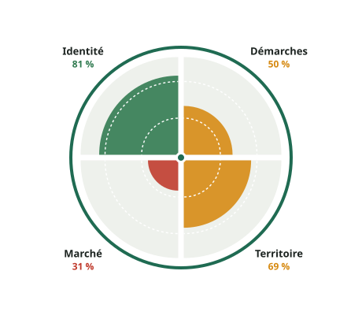

Un diagnostic d'insertion clair, en un seul entretien.
Quadria guide le conseiller à travers 64 questions sur quatre dimensions, puis rédige le diagnostic et un plan d'action daté, prêt à signer avec le candidat.
Essai sans inscription : 10 ouvertures pendant 30 jours.

Quatre dimensions, une vision complète
Identité
Connaissance de soi, atouts, compétences, confiance.
Démarches
Méthodes de recherche, CV, candidatures, relances, entretiens.
Marché
Connaissance des métiers, des secteurs qui recrutent et des employeurs.
Territoire
Mobilité, freins périphériques, ressources locales.
Un module complémentaire mesure la maturité du projet professionnel et repère l'étape à travailler en priorité.
Ce que Quadria fait pour vous
Diagnostic rédigé
Synthèse, analyse par dimension, appuis repérés et points à travailler, à partir des réponses.
Plan d'action daté
Actions proposées à 1, 2, 4, 8 semaines et 3 mois, modifiables, avec suivi des échéances et des retards.
Suivi dans le temps
Comparez le premier diagnostic et la situation actuelle, côte à côte. Idéal pour les bilans.
Mode candidat
Le candidat répond seul sur tablette, une question à la fois, avec lecture à voix haute.
Questionnaire papier
Imprimez les questions pour les remettre au candidat avant l'entretien.
À vos couleurs
Nom et logo de votre structure sur tous les documents imprimés.
Vos données restent chez vous
Aucune IA
Les analyses suivent des règles fixes et transparentes : même réponses, même diagnostic.
Rien ne quitte le poste
Les dossiers des candidats sont enregistrés dans le navigateur du conseiller et dans les fichiers que vous exportez. Nous n'y avons pas accès.
Fonctionne hors connexion
Une connexion est seulement nécessaire pour vérifier la licence, au moins une fois tous les 30 jours.